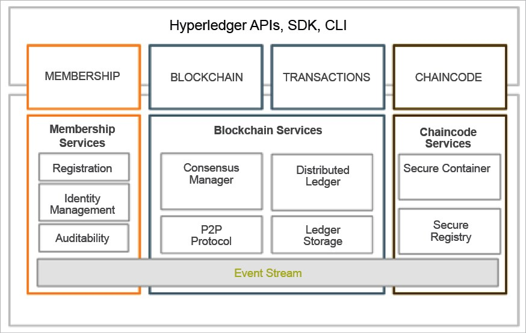

Smart Keyless Project with Blockchain
Presented by Najjar Chedy
Overview
- Smart keyless
- Data Model
- Blockchain 101
- Ordinary Database vs blockchain
- why blockchain over DBs?
- Blockchain Platforms
- Security & other technical issues
- Conclusion
Smart Keyless system
Components of the system
The Smart Keyless system is essentially composed of:
- locker device
- users smart phone
- backend of the system
Architecture of the System

Key point of the previous figure:
- locker & smart phones communicate over BLE
- locker communicate with backend through IoT
Data Model
Initial Data Model
Blockchain intro
Definition
Blockchain is a distributed shared ledger. Blockchain can be considered a shared ledger of transactions. The transaction are ordered and grouped into blocks.
Blockchain(or DLTs) fundamental components
- Datastrucuture
- Consensus
- P2P network
- Transactions
- Smart Constracts
- Cryptography
- ...
Database Vs Blockchain
Blockchain... But why?
why a Blockchain based approach is favorable over a Database one?
Platforms for Blockchain Products
These are the platforms available for a developing Blockchain-based solution:
- Hyperledger Project(fabric, sawtooth,..)
- MultiChain
- BigChain
- Etherium
- openChain
- HydraChain
- IBM Blockchain
Hyperledger project Services
High-level Overview of Hyperledger Fabric
Mutlichain
Mutlichain is an open source platform build in the beginning for high speed financial Transaction and added the support of non-finacial use case.
Bigchain
Bigchain is a database that has integrated blockchain properties.
Example of Bigchain node configuration
Bigchain whitepaper
Comparing platforms
Criteria for platform evaluation:
- Popularity - implies robustness, trust in the platform, reliability
- Price & license
- Ease of use
- Supported Programming language
- features of the system
- company developping and maintainging the platform
Security and other problems